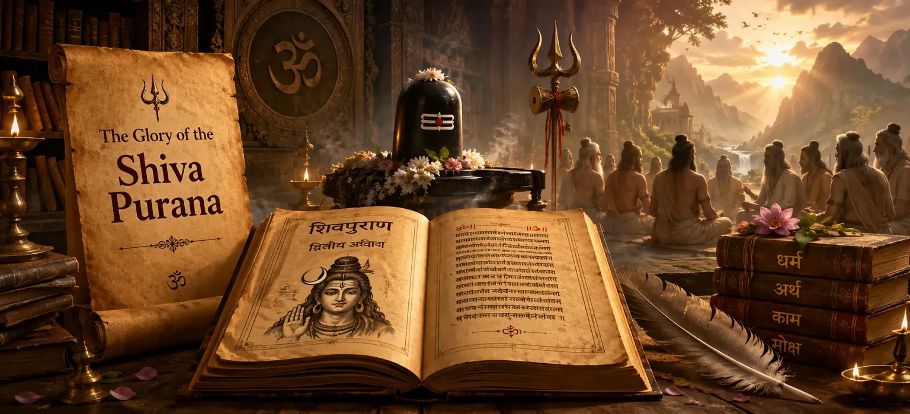

📖 Read the Sacred Shiva Purana Online • Har Har Mahadev 🔱
📖 পবিত্র শিব পুরাণ পাঠ করুন • হর হর মহাদেব 🔱

Chapter 2 → The Glory of Lord Shiva
অধ্যায় ২ → ভগবান শিবের মহিমা
After hearing the questions of the sages, Suta Maharshi begins by glorifying the Shiva Purana itself. Before revealing the sacred teachings of Lord Shiva, he explains why this divine scripture is worthy of study. The Shiva Purana is described as a spiritual treasure that destroys ignorance, strengthens devotion and guides devotees toward liberation.
ঋষিদের প্রশ্ন শ্রবণের পর সূত মহর্ষি প্রথমে শিব পুরাণের মাহাত্ম্য বর্ণনা করেন। মহাদেবের পবিত্র উপদেশ প্রকাশ করার পূর্বে তিনি ব্যাখ্যা করেন কেন এই দিব্য গ্রন্থ অধ্যয়নের যোগ্য। শিব পুরাণকে এমন এক আধ্যাত্মিক রত্ন হিসেবে বর্ণনা করা হয়েছে যা অজ্ঞতা দূর করে, ভক্তি বৃদ্ধি করে এবং মোক্ষের পথে পরিচালিত করে।
Why is the Shiva Purana Great?
শিব পুরাণ কেন মহান?
📖
The Shiva Purana is regarded as one of the most sacred scriptures dedicated to Lord Shiva. It contains divine knowledge, sacred stories, spiritual practices and teachings that help devotees understand the true nature of Mahadev and the purpose of life.
শিব পুরাণ ভগবান শিবকে উৎসর্গ করা অন্যতম শ্রেষ্ঠ পবিত্র শাস্ত্র। এতে দিব্য জ্ঞান, পবিত্র কাহিনী, আধ্যাত্মিক সাধনা এবং এমন শিক্ষা রয়েছে যা ভক্তকে মহাদেবের প্রকৃত স্বরূপ ও জীবনের উদ্দেশ্য উপলব্ধি করতে সাহায্য করে।
Benefits of Reading Shiva Purana
শিব পুরাণ পাঠের উপকারিতা
✨
Purifies the Mindমনকে পবিত্র করে
The sacred teachings remove negative thoughts and inspire purity.
পবিত্র শিক্ষা নেতিবাচক চিন্তা দূর করে এবং পবিত্রতার অনুপ্রেরণা দেয়।
🙏
Strengthens Devotionভক্তি বৃদ্ধি করে
Listening to Shiva's glory deepens love and devotion toward Mahadev.
মহাদেবের মাহাত্ম্য শ্রবণ ভক্তি ও প্রেমকে আরও গভীর করে।
🕉️
Leads to Liberationমোক্ষের পথে পরিচালিত করে
The Purana guides devotees toward spiritual realization and liberation.
এই পুরাণ ভক্তকে আধ্যাত্মিক উপলব্ধি ও মোক্ষের পথে পরিচালিত করে।
The Glory of Listening to the Shiva Puranaশিব পুরাণ শ্রবণের মাহাত্ম্য
Suta Maharshi explains that merely listening to the Shiva Purana with faith can purify the heart and remove the effects of accumulated sins. Unlike ordinary stories, the Shiva Purana carries divine wisdom that transforms the listener. Even those who cannot perform difficult spiritual practices may attain great merit through sincere hearing of its teachings.
সূত মহর্ষি ব্যাখ্যা করেন যে ভক্তিভরে শিব পুরাণ শ্রবণ করলেই হৃদয় পবিত্র হয় এবং সঞ্চিত পাপের প্রভাব দূর হতে শুরু করে। এটি সাধারণ কাহিনী নয়; এতে এমন দিব্য জ্ঞান রয়েছে যা শ্রোতার জীবনকে রূপান্তরিত করতে পারে। যারা কঠিন সাধনা করতে সক্ষম নয়, তারাও আন্তরিকভাবে এই পুরাণ শ্রবণ করে মহান পুণ্য অর্জন করতে পারে।
The Importance of the Shiva Purana in Kali Yugaকলিযুগে শিব পুরাণের গুরুত্ব
The chapter emphasizes that Kali Yuga is an age marked by confusion, spiritual decline and attachment to worldly pleasures. Because people often lack the discipline required for intense austerities, the Shiva Purana serves as an accessible path to spiritual growth. Through its stories and teachings, devotees can remember Lord Shiva and remain connected to righteousness.
এই অধ্যায়ে বলা হয়েছে যে কলিযুগ বিভ্রান্তি, আধ্যাত্মিক অবক্ষয় এবং ভোগবিলাসের যুগ। অধিকাংশ মানুষের পক্ষে কঠোর তপস্যা করা সম্ভব নয়। তাই শিব পুরাণকে সহজ আধ্যাত্মিক পথ হিসেবে বর্ণনা করা হয়েছে। এর কাহিনী ও শিক্ষার মাধ্যমে ভক্তরা মহাদেবকে স্মরণ করতে পারে এবং ধর্মের পথে স্থির থাকতে পারে।
The Four Goals of Human Lifeমানবজীবনের চার পুরুষার্থ
⚖️
Dharmaধর্ম
Living a righteous and virtuous life.ধার্মিক ও ন্যায়পরায়ণ জীবনযাপন।
💰
Arthaঅর্থ
Attaining lawful prosperity and stability.ন্যায়সঙ্গত সমৃদ্ধি ও স্থিতি অর্জন।
🌸
Kamaকাম
Fulfillment of noble desires and aspirations.শুভ ইচ্ছা ও আকাঙ্ক্ষার পূরণ।
🕉️
Mokshaমোক্ষ
Freedom from the cycle of birth and death.জন্ম-মৃত্যুর বন্ধন থেকে মুক্তি।
Spiritual Message of the Chapterঅধ্যায়ের আধ্যাত্মিক বার্তা
The central message of this chapter is that sacred knowledge should never be underestimated. The Shiva Purana is presented not merely as a collection of stories but as a divine guide capable of transforming human life. Faith, devotion and regular study of sacred teachings bring a devotee closer to Lord Shiva and prepare the soul for liberation.
এই অধ্যায়ের মূল শিক্ষা হল—পবিত্র জ্ঞানকে কখনও অবহেলা করা উচিত নয়। শিব পুরাণকে শুধু কাহিনীর সংকলন নয়, বরং মানবজীবনকে রূপান্তরিত করার এক দিব্য পথপ্রদর্শক হিসেবে উপস্থাপন করা হয়েছে। ভক্তি, বিশ্বাস এবং নিয়মিত শাস্ত্রপাঠ মানুষকে মহাদেবের নিকটবর্তী করে এবং মোক্ষের জন্য প্রস্তুত করে।
Main Teachings of the Chapter
অধ্যায়ের প্রধান শিক্ষা
📖
Sacred Scriptureপবিত্র শাস্ত্র
The Shiva Purana is praised as one of the greatest spiritual scriptures.
শিব পুরাণকে অন্যতম শ্রেষ্ঠ আধ্যাত্মিক শাস্ত্র হিসেবে বর্ণনা করা হয়েছে।
✨
Destroys Sinপাপ নাশ করে
Its recitation removes the impurities and sins of Kali Yuga.
এর পাঠ কলিযুগের পাপ ও অশুদ্ধতা দূর করে।
🕉️
Path to Liberationমোক্ষের পথ
Listening with devotion helps devotees attain spiritual progress and liberation.
ভক্তিভরে শ্রবণ করলে ভক্ত আধ্যাত্মিক উন্নতি ও মোক্ষ লাভ করে।
Important Characters
গুরুত্বপূর্ণ চরিত্র
📿
Suta Maharshiসূত মহর্ষি
🙏
The Sagesঋষিগণ
🔱
Lord Shivaভগবান শিব
Chapter Summary
অধ্যায়ের সারাংশ
In this chapter, Suta Maharshi explains the greatness of the Shiva Purana to the assembled sages. He describes it as a sacred scripture that destroys the sins of Kali Yuga, grants spiritual wisdom and leads devotees toward liberation. The Shiva Purana is praised as a source of dharma, devotion and knowledge of Lord Shiva.
এই অধ্যায়ে সূত মহর্ষি সমবেত ঋষিদের কাছে শিব পুরাণের মাহাত্ম্য বর্ণনা করেন। তিনি ব্যাখ্যা করেন যে এই পবিত্র গ্রন্থ কলিযুগের পাপ নাশ করে, আধ্যাত্মিক জ্ঞান প্রদান করে এবং ভক্তকে মোক্ষের পথে পরিচালিত করে। শিব পুরাণকে ধর্ম, ভক্তি ও মহাদেবের জ্ঞানের এক মহান উৎস হিসেবে প্রশংসা করা হয়েছে।
"The Shiva Purana is a divine lamp that illuminates the path of devotion, wisdom and liberation."
"শিব পুরাণ এমন এক দিব্য প্রদীপ যা ভক্তি, জ্ঞান ও মোক্ষের পথকে আলোকিত করে।"
Did You Know?
আপনি কি জানেন?
This chapter declares that the Shiva Purana grants the four goals of human life—Dharma (righteousness), Artha (prosperity), Kama (fulfillment of desires) and Moksha (liberation). It teaches that sincere study of the Purana brings devotees closer to Lord Shiva.
এই অধ্যায়ে বলা হয়েছে যে শিব পুরাণ মানবজীবনের চারটি পুরুষার্থ—ধর্ম, অর্থ, কাম ও মোক্ষ—প্রদান করে। আন্তরিক ভক্তিভরে এর অধ্যয়ন ভক্তকে মহাদেবের আরও নিকটে নিয়ে যায়।
What Happens Next?
পরবর্তী অধ্যায়ে কী ঘটবে?
After glorifying the Shiva Purana, the sages continue their inquiry and seek deeper knowledge regarding Lord Shiva, His supreme nature and the path to spiritual realization.
শিব পুরাণের মাহাত্ম্য শ্রবণের পর ঋষিগণ ভগবান শিবের পরম স্বরূপ এবং আধ্যাত্মিক উপলব্ধির পথ সম্পর্কে আরও গভীর জ্ঞান লাভের জন্য প্রশ্ন করতে থাকেন।
① Why is the Shiva Purana considered sacred?
① শিব পুরাণকে কেন পবিত্র শাস্ত্র বলা হয়?
The Shiva Purana is regarded as sacred because it contains the divine teachings, stories and spiritual wisdom of Lord Shiva. It helps devotees understand dharma, devotion and the path to liberation.
শিব পুরাণকে পবিত্র বলা হয় কারণ এতে ভগবান শিবের দিব্য উপদেশ, কাহিনী ও আধ্যাত্মিক জ্ঞান সংরক্ষিত রয়েছে। এটি ভক্তকে ধর্ম, ভক্তি এবং মোক্ষের পথ সম্পর্কে শিক্ষা দেয়।
② What benefits are gained by reading the Shiva Purana?
② শিব পুরাণ পাঠ করলে কী উপকার হয়?
According to this chapter, reading or listening to the Shiva Purana purifies the mind, removes sins, increases devotion and guides a person toward spiritual growth and liberation.
এই অধ্যায় অনুযায়ী, শিব পুরাণ পাঠ বা শ্রবণ মনকে পবিত্র করে, পাপ দূর করে, ভক্তি বৃদ্ধি করে এবং মানুষকে আধ্যাত্মিক উন্নতি ও মোক্ষের পথে পরিচালিত করে।
③ Why is the Shiva Purana especially important in Kali Yuga?
③ কলিযুগে শিব পুরাণ কেন বিশেষভাবে গুরুত্বপূর্ণ?
Kali Yuga is described as an age of confusion and spiritual decline. The Shiva Purana provides an easy and accessible path for people to remember Lord Shiva and follow righteous living.
কলিযুগকে বিভ্রান্তি ও আধ্যাত্মিক অবক্ষয়ের যুগ বলা হয়েছে। শিব পুরাণ মানুষকে সহজভাবে মহাদেবকে স্মরণ করতে এবং ধর্মময় জীবনযাপন করতে সাহায্য করে।
④ What are the four goals of life mentioned in this chapter?
④ এই অধ্যায়ে উল্লেখিত জীবনের চার পুরুষার্থ কী?
The chapter refers to Dharma (righteousness), Artha (prosperity), Kama (fulfillment of desires) and Moksha (liberation). The Shiva Purana is said to help devotees attain all four.
এই অধ্যায়ে ধর্ম, অর্থ, কাম এবং মোক্ষের কথা বলা হয়েছে। শিব পুরাণ ভক্তকে এই চার পুরুষার্থ অর্জনে সহায়তা করে বলে বর্ণিত হয়েছে।
⑤ What is the main message of Chapter 2?
⑤ দ্বিতীয় অধ্যায়ের মূল শিক্ষা কী?
The main message is that sacred knowledge transforms life. Through sincere study, listening and devotion, the teachings of the Shiva Purana bring a devotee closer to Lord Shiva and the ultimate goal of liberation.
এই অধ্যায়ের মূল শিক্ষা হলো পবিত্র জ্ঞান মানুষের জীবনকে রূপান্তরিত করতে পারে। আন্তরিকভাবে শিব পুরাণ অধ্যয়ন, শ্রবণ ও অনুসরণ করলে ভক্ত মহাদেবের নিকটবর্তী হয় এবং মোক্ষের পথে অগ্রসর হয়।
Continue Reading
পাঠ চালিয়ে যান
Explore the previous and next chapters of Vidyeshvara Samhita.
বিদ্যেশ্বর সংহিতার পূর্ববর্তী ও পরবর্তী অধ্যায়গুলি অন্বেষণ করুন।